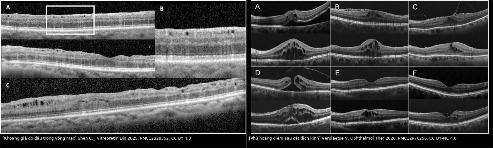
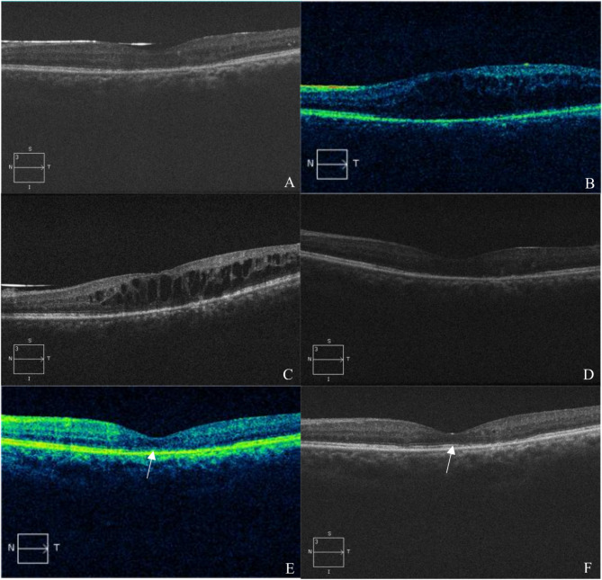
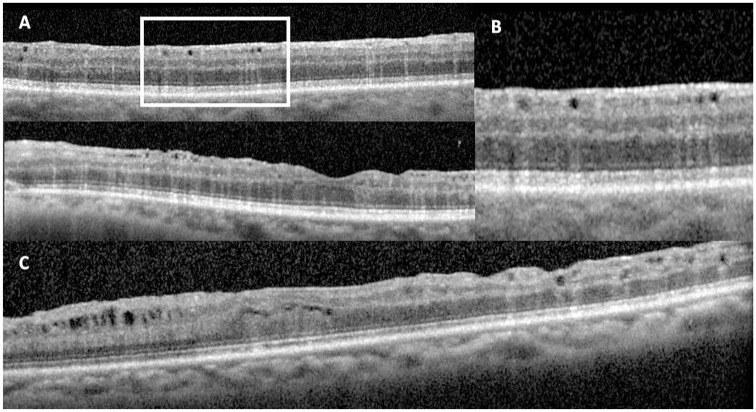
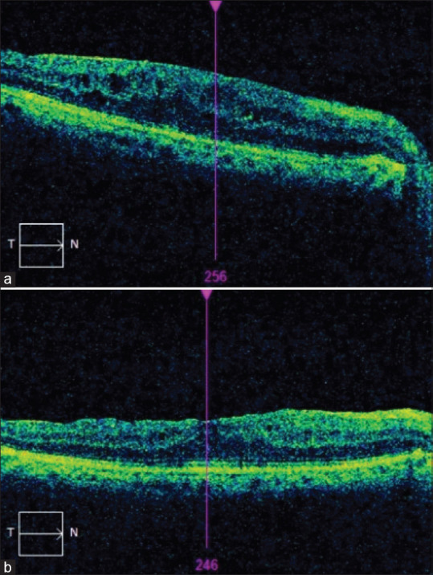
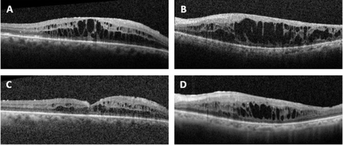

1875 — Phù hoàng điểm dạng nang (CME) sau phacovitrectomy trên mắt bơm dầu: CST, phân biệt với dầu trong võng mạc, khi nào tiêm trong dầu / Cystoid macular edema in the oil-filled eye
Tags: pattern:phu-hoang-diem pattern:nang-hoang-diem pattern:phu-hoang-diem-sau-mo pattern:dau-trong-vong-mac pattern:co-keo-hoang-diem vung:hoang-diem vung:vong-mac vung:mat vung:dich-kinh protocol:OCT protocol:OCTA protocol:phacovitrectomy protocol:tiem-noi-nhan score:CST score:CMT
Mức chắc chắn (certainty): tổng hợp y văn (literature synthesis) — nhóm tự biên, đã đối chiếu authorString/PMCID: CME mới xuất hiện sau bơm dầu 6 mắt (CC BY-NC-ND 4.0, PMC11951619), phù hoàng điểm sau cắt dịch kính — tổng quan (CC BY-NC 4.0, PMC12976256), phù hoàng điểm ở 45 mắt bơm dầu sau bong võng mạc (CC BY-NC-SA 4.0, PMC12604728), tiêm trong dầu 8 mắt (CC BY-NC 3.0, PMC11590676), bromfenac sau phacovitrectomy 282 mắt (CC BY 4.0, PMC13483430), dầu trong võng mạc 28 ca (CC BY 4.0, PMC12328352), Irvine–Gass (CC BY 4.0, PMC8509495). Chỗ suy luận được ghi rõ.
Vì sao bài này quan trọng: bài 1863 nêu phù hoàng điểm 3% (một thì) vs 23% (hai thì) khi lấy dầu + phaco và dừng ở con số; bài 1865 dạy bong võng mạc tái phát sau tháo dầu. Nhưng câu hỏi hằng ngày là: mắt còn dầu, OCT thấy nang ở hoàng điểm — đó là CME thật hay dầu trong võng mạc, có nên tiêm trong dầu, và có nên lấy dầu sớm hơn kế hoạch? CME sau bơm dầu xuất hiện 28,83 ± 9,22 ngày sau mổ, làm hoàng điểm dày 411 ± 41 µm, và giảm còn 267 ± 69 µm chỉ 3 ngày sau lấy dầu (PMC11951619) — nghĩa là quyết định đúng về thời điểm lấy dầu có thể chữa CME nhanh hơn mọi mũi tiêm, trong khi tiêm nhầm vào "khoang giả do dầu" thì vô ích.
1. Tổng quan bệnh học – cơ chế hình ảnh: vì sao nang hình thành ở INL và vì sao dầu làm nó kéo dài
- Bệnh học: sau phẫu thuật, hàng rào máu–võng mạc (blood–retinal barrier) bị phá vỡ → prostaglandin (COX-2), VEGF, IL-6 tăng → tế bào nội mô mao mạch hoàng điểm rò huyết tương. Dịch tích trong tế bào Müller và Henle's fiber layer (lớp nhân trong, INL) trước, sau đó mới lan lớp nhân ngoài (ONL) — đúng trình tự OCT ghi nhận: 3/6 mắt nang khởi đầu ở INL, 3/6 ở cả INL và ONL (PMC11951619).
- TẠI SAO ở mắt đã cắt dịch kính lại nặng hơn (bắt buộc giải thích):
- Mất "kho dự trữ" dịch kính. Không còn gel hyaluronan giữ thuốc và cytokine tại chỗ → nồng độ thuốc trong mắt giảm nhanh hơn, đồng thời oxy khuếch tán tự do vào hoàng điểm; loạt tiêm trong dầu cần tới 8,25 ± 7,24 mũi cho một mắt (PMC11590676).
- Dầu là vật thể lạ thường trực. Màng dầu áp sát hoàng điểm tạo viêm mạn mức thấp và kích thích cơ học; tổng quan phù hoàng điểm sau cắt dịch kính liệt kê "nang dầu silicone" là yếu tố thúc đẩy cùng bong tái phát, PVR, đốt laser diện rộng, tổn thương hoàng điểm (PMC12976256).
- Phẫu thuật hai thì nhân đôi nguy cơ. Ở 272 mắt, CME 23% (hai thì) vs 3% (một thì) và tăng nhãn áp 23% vs 7% (p = 0,013) — mỗi lần vào mắt là một lần phá hàng rào máu–võng mạc (PMC13221386, dùng lại từ bài 1863).
- Tổn thương ngoài võng mạc sẵn có. PVR nặng là yếu tố nguy cơ độc lập (p = 0,007) trong 45 mắt bơm dầu sau bong võng mạc, với phù hoàng điểm 26,66% tại 3 tháng (PMC12604728).
- Vật lý OCT — TẠI SAO nang "trống" lại tối: dịch trong nang không tán xạ ánh sáng hồng ngoại → giảm hồi âm (hyporeflective), bờ nang là tế bào Müller căng (tăng hồi âm nhẹ). Ngược lại, giọt dầu nhũ tương trong võng mạc tán xạ mạnh (kích thước gần bước sóng) → đốm tăng hồi âm trên ảnh en-face hồng ngoại và tăng hồi âm ở lớp sâu, trong khi khoang dầu vẫn giảm hồi âm — đây là dấu hiệu phân biệt cốt lõi với CME (PMC12328352).
- Ngưỡng định lượng (theo
PROMPT_SYNTHESIZER.md):- Khởi phát CME sau bơm dầu: 28,83 ± 9,22 ngày (6 mắt); độ dày hoàng điểm 411 ± 41 µm trước lấy dầu → 267 ± 69 µm sau 3 ngày (p = 0,028); 4/6 (66,7%) nang biến mất trong 3 ngày, 2/6 còn nang INL; thị lực 0,82 ± 0,40 → 0,75 ± 0,45 logMAR (p = 0,285) (PMC11951619).
- Tỷ lệ phù hoàng điểm sau cắt dịch kính cần điều trị: 2,0–27,3%; cao hơn ở bong võng mạc, mảnh thể thủy tinh sót, màng trước võng mạc; tăng sau khi lấy thể thủy tinh (một thì hoặc hai thì) (PMC12976256).
- 26,66% (12/45) phù hoàng điểm tại 3 tháng ở mắt bơm dầu sau bong võng mạc nguyên phát; PVR nặng p = 0,007; 5/45 mắt được tiêm triamcinolone dưới Tenon sau (PMC12604728).
- Tiêm trong dầu: 8 mắt, CSMT 488 ± 104 → 396 ± 184 µm (p = 0,11), thị lực 1,7 ± 0,8 → 1,4 ± 0,7 logMAR (p = 0,45) — cải thiện một phần, không có biến chứng (PMC11590676).
- NSAID tại chỗ sớm (< 4 tuần) sau phacovitrectomy màng trước võng mạc: 282 mắt, CSMT giảm 93,9 ± 56,2 µm vs 76,6 ± 52,8 µm ở 6 tháng, chênh ~14–15 µm, thị lực hồi phục nhanh hơn ở tháng 1 (p = 0,016) (PMC13483430).
- Dầu trong võng mạc (giả CME): 28 ca, toàn bộ dùng dầu 5.000 cSt, đã bóc màng giới hạn trong (ILM) trước khi bơm lần cuối, dầu lưu 220 ± 198 ngày (PMC12328352).
- Ngưỡng điều trị: không có đồng thuận — thử nghiệm dùng CMT ≤ 300 µm làm tiêu chí thành công; thực hành repo dùng CST ≥ 300 µm (bài 441) kèm giảm thị lực ≥ 1 dòng hoặc CST tăng ≥ 10% so với nền. Số nào chưa kiểm chứng được ghi "chưa rõ — cần tra", không bịa.
2. Mẫu hình + chẩn đoán phân biệt theo cơ chế (Gamut)
- Mẫu hình lõi: mắt đã phacovitrectomy ± dầu, giảm thị lực trung tâm vài tuần sau mổ, đáy mắt có thể bình thường hoặc phù nhẹ, OCT là chốt — nang giảm hồi âm ở INL/Henle, CST tăng, EZ/ELM còn hay mất quyết định tiên lượng.
- Gamut theo 4 cơ chế (nhóm theo "tại sao hoàng điểm dày/dịch"):
- Tăng tính thấm (rò): CME sau phẫu thuật (Irvine–Gass), CME do dầu, CME do thuốc (prostaglandin, epinephrine), bệnh võng mạc ĐTĐ, tắc tĩnh mạch.
- Dịch "không phải nước": dầu trong võng mạc (khoang giả), dầu dưới võng mạc, mảnh silicon.
- Co kéo: màng trước võng mạc/PVR (nang do traction), lỗ hoàng điểm, dịch kính–võng mạc dính.
- Ngoài hoàng điểm: đục IOL/bao sau, dầu tiền phòng, phù giác mạc, bệnh thần kinh thị sau mổ, viêm nội nhãn (cấp, đau — luôn loại trừ trước).
- Câu hỏi ba bước khi đứng trước OCT có nang: (1) nang giảm hồi âm đều hay có đốm tăng hồi âm bên trong? (2) EZ/ELM còn nguyên? (3) có co kéo (màng, traction) hay dịch dưới võng mạc kèm theo?
3. Bảng so sánh phân biệt (ma trận đối chiếu)
| Thực thể (entity) | Hình ảnh / đặc điểm điển hình | Chốt vào (rule-in) | Chốt loại (rule-out) | Gợi ý xác nhận |
|---|---|---|---|---|
| CME sau phẫu thuật (Irvine–Gass) trên mắt bơm dầu | Nang giảm hồi âm ở INL/Henle rồi ONL, CST 411 ± 41 µm; khởi phát 28,83 ± 9,22 ngày | Tiền sử phaco/PPV + nang ở INL + CST tăng + không đốm tăng hồi âm | Đốm tăng hồi âm trong nang + bờ tăng hồi âm sâu → dầu trong võng mạc | OCT macula (cube), so OCT nền; đáp ứng NSAID/steroid |
| Dầu trong võng mạc (giả CME) | Khoang tròn giảm hồi âm ưu thế INL + tăng hồi âm lớp sâu, đốm tăng hồi âm trên en-face hồng ngoại; đáy mắt có hạt vàng có lòng trong | Dầu 5.000 cSt + đã bóc ILM + dầu lưu 220 ± 198 ngày + không đáp ứng điều trị | Nang thật + đáp ứng sau lấy dầu/tiêm | OCT + NIR en-face; không tiêm lặp lại |
| Co kéo màng trước võng mạc/PVR | Nang dưới màng co kéo, màng tăng hồi âm trên bề mặt, võng mạc nhăn, có thể kèm TRD | Màng + nếp co + nang khu trú dưới màng | Nang đối xứng trung tâm, không màng → CME thật | OCT B-scan nhiều lát; cân nhắc bóc màng |
| Dịch dưới võng mạc/tái bong | Khoang giảm hồi âm DƯỚI võng mạc cảm thụ, không phải trong võng mạc | Dịch dưới võng mạc + bờ võng mạc tách khỏi RPE | Nang nằm trong võng mạc → CME | OCT + B-scan; so ảnh cũ |
| Lỗ hoàng điểm | Đứt toàn bộ võng mạc trung tâm, bờ nang, ILM mất | Lỗ + bờ nang + đường kính lỗ (µm) | Không đứt lớp → CME | OCT; đo đường kính lỗ |
| Thiếu máu hoàng điểm | Mất/giảm tưới mao mạch trên OCTA, võng mạc mỏng chứ không dày | OCTA giảm mật độ mao mạch + CST không tăng | CST tăng + nang → CME | OCTA 3×3/6×6 mm |
| Đục IOL/bao sau (giảm thị lực, không phù) | Màng trắng sau IOL hoặc đục mặt trước IOL; OCT hoàng điểm bình thường | OCT bình thường + màng trên trục quang | CST tăng + nang → CME | Đèn khe; xem bài 1873 |

Trái: khoang giả do dầu trong võng mạc — khoang giảm hồi âm ưu thế lớp trong + tăng hồi âm lớp sâu (Shen C et al., J Vitreoretin Dis 2025, PMC12328352, Fig. 3, CC BY 4.0). Phải: phù hoàng điểm sau cắt dịch kính — nang giảm hồi âm trong võng mạc, bờ Müller căng (Verplaetse V et al., Ophthalmol Ther 2026, PMC12976256, Fig. 1, CC BY-NC 4.0). Ảnh ghép letterbox, không crop.Ba dấu hiệu phân biệt CME thật – khoang giả do dầu (đọc chuẩn xác)
- Vị trí khoang: CME tập trung quanh hố trung tâm, đối xứng; dầu ưu thế lớp trong (INL) và có thể dọc theo mạch hoặc dưới màng ILM đã bóc.
- Nội dung khoang: CME trống hoàn toàn; dầu có đốm tăng hồi âm nhỏ trong khoang và tăng hồi âm lớp sâu bên dưới (tán xạ).
- Đáp ứng điều trị: CME giảm sau NSAID/steroid hoặc sau lấy dầu (411 → 267 µm trong 3 ngày); dầu không đổi dù tiêm nhiều mũi.
4. Protocol: OCT, ngưỡng điều trị và bậc thang xử trí
- OCT (bắt buộc trước và sau mổ):
- Macular cube 512 × 128 (hoặc 6 × 6 mm), đo CST theo ETDRS; chụp trước phacovitrectomy làm nền, 1 tuần – 1 tháng – 3 tháng sau mổ.
- Ghi rõ: vị trí nang (INL/Henle/ONL), EZ và ELM còn/mất, màng trước võng mạc, dịch dưới võng mạc, dấu hiệu dầu (đốm tăng hồi âm).
- Mắt còn dầu: OCT vẫn đọc được (dầu trong, n = 1,404) nhưng giọt nhũ tương gây bóng/tán xạ — luôn đối chiếu en-face hồng ngoại để phân biệt.
- Ngưỡng điều trị (thực hành, chưa có đồng thuận): điều trị khi CST ≥ 300 µm hoặc tăng ≥ 10% so với nền, kèm giảm ≥ 1 dòng thị lực hoặc ám điểm trung tâm; thử nghiệm Irvine–Gass dùng CMT ≤ 300 µm làm tiêu chí thành công (PMC8509495). EZ mất → tiên lượng kém hơn dù CST giảm.
- Bậc thang xử trí (từ ít xâm lấn đến triệt để):
- NSAID tại chỗ (bromfenac/nepafenac) ± corticoid tại chỗ: khởi đầu trong 4 tuần sau phacovitrectomy giúp CSMT giảm thêm ~14–15 µm ở 6 tháng và hồi phục thị lực nhanh hơn (PMC13483430); NSAID là first-line cho Irvine–Gass (PMC8509495).
- Triamcinolone dưới Tenon sau: dùng ở 5/45 mắt trong loạt bơm dầu (PMC12604728); đáp ứng nhanh, theo dõi IOP (bài 1411).
- Tiêm trong dầu (dexamethasone implant/anti-VEGF): khi chưa thể lấy dầu; kỳ vọng CSMT 488 → 396 µm, thị lực cải thiện không đáng kể (p = 0,45), cần nhiều mũi (8,25 ± 7,24) — tư vấn trước để bệnh nhân không kỳ vọng quá (PMC11590676).
- Lấy dầu khi võng mạc đã ổn định: hiệu quả nhanh nhất — 411 ± 41 → 267 ± 69 µm sau 3 ngày, 66,7% hết nang trong 3 ngày (PMC11951619); cân nhắc phẫu thuật một thì (lấy dầu + phaco) vì CME 3% vs 23% ở hai thì (PMC13221386).
- Cắt dịch kính/bóc màng khi có co kéo hoặc màng trước võng mạc tiến triển.
- Phân tầng quyết định (flowchart):
flowchart TD
A["Mắt phacovitrectomy + dầu: thị lực giảm, OCT có nang"] --> B{"Nang giảm hồi âm đều hay có đốm tăng hồi âm?"}
B -->|Có đốm tăng hồi âm + dầu 5000 cSt + đã bóc ILM| C["Dầu trong võng mạc: không tiêm lặp lại"]
B -->|Giảm hồi âm đều ở INL/Henle| D{"CST 300 µm trở lên hoặc tăng 10 phần trăm?"}
D -->|Không| E["Theo dõi OCT 1 tháng; NSAID tại chỗ"]
D -->|Có| F{"Võng mạc áp và ổn định để lấy dầu?"}
F -->|Có| G["Lấy dầu: 411 xuống 267 µm trong 3 ngày; cân nhắc một thì với phaco"]
F -->|Không| H["NSAID + corticoid tại chỗ; cân nhắc STTA"]
H --> I{"Còn phù sau 4-6 tuần?"}
I -->|Có| J["Tiêm trong dầu: implant DEX hoặc anti-VEGF; tư vấn nhiều mũi, đáp ứng một phần"]
I -->|Không| E
C --> K["Theo dõi CST và EZ; tránh tiêm lặp vô ích"]
- Theo dõi sau điều trị: OCT tháng 1, 3, 6; đo IOP sau mỗi mũi corticoid (bài 1411); kiểm tra EZ/ELM — nếu EZ mất, giải thích thị lực có thể không hồi phục dù hết phù.
5. Biến thể bình thường và cạm bẫy
- "Nang" không phải lúc nào cũng là phù: dầu trong võng mạc tạo khoang giảm hồi âm nhưng có đốm tăng hồi âm và tăng hồi âm lớp sâu; tiêm steroid/anti-VEGF không có lợi và làm tăng nguy cơ (PMC12328352).
- Nang sau bóc màng trước võng mạc có thể là "di chứng co kéo", không phải CME: tổng quan nêu rõ biến đổi nang trong võng mạc sau bóc ERM thường là di chứng của bệnh co kéo và rối loạn chức năng Müller, không phải phù thật — đừng leo thang điều trị chỉ vì CST còn cao (PMC12976256).
- Đừng chờ "hết dầu" mới điều trị nếu võng mạc chưa ổn định: tiêm trong dầu an toàn nhưng đáp ứng một phần; ngược lại nếu có thể lấy dầu, đó là điều trị hiệu quả nhất (411 → 267 µm trong 3 ngày) (PMC11590676, PMC11951619).
- CST bình thường không loại trừ CME sớm: CME khởi phát 28,83 ± 9,22 ngày; OCT ngày 3 sau bơm dầu có thể hoàn toàn bình thường (ca 1: OCT ngày 3 sạch, nang xuất hiện ngày 24) — không được "chụp một lần rồi kết luận" (PMC11951619).
- Đừng quy mọi giảm thị lực sau mổ cho CME: phải loại trừ đục IOL/bao sau (bài 1873), dầu tiền phòng, phù giác mạc, bệnh thần kinh thị, và viêm nội nhãn (bài 1425) — mỗi thực thể có xử trí khác hẳn.
- EZ/ELM là "đồng hồ tiên lượng": EZ còn nguyên → thị lực có thể hồi phục; EZ mất → dù CST về bình thường, thị lực có thể không cải thiện (PMC11951619).
- Hai thì = hai lần phá hàng rào: nếu bắt buộc mổ thể thủy tinh, cân nhắc một thì (CME 3% vs 23%) và NSAID dự phòng sớm (PMC13221386, PMC13483430).
6. Tự lượng giá — Blind Quiz
Ca 1 — Nam 55 tuổi, bong võng mạc + dầu 5.000 cSt. Ngày 24 sau mổ: nhìn mờ trung tâm, OCT thấy nang INL/Henle. Võng mạc áp.

- Gợi ý: (A) OCT ngày 3 sau bơm dầu; (B) ngày 24; (C) sau 3 tháng còn dầu; (D) 3 ngày sau lấy dầu; (E, F) chi tiết EZ/ELM.
- Câu hỏi: Chẩn đoán? Vì sao nang xuất hiện muộn? Sau lấy dầu điều gì xảy ra và vì sao?
Bấm để hiện đáp án (findings + chẩn đoán)
- Dấu hiệu: (A) không phù ngày 3; (B) nang ở INL, Henle và ONL ngày 24; (C) còn nang sau 3 tháng dầu; (D) nang biến mất 3 ngày sau lấy dầu nhưng EZ/ELM gián đoạn (mũi tên E, F).
- Chẩn đoán: CME mới xuất hiện sau bơm dầu, khởi phát 28,83 ± 9,22 ngày; độ dày hoàng điểm 411 ± 41 → 267 ± 69 µm sau 3 ngày (p = 0,028), 4/6 hết nang trong 3 ngày; thị lực cải thiện không có ý nghĩa (0,82 → 0,75 logMAR) vì EZ đã tổn thương.
- Nguồn: Bai JX et al., BMC Ophthalmol 2025 (PMC11951619), Fig. 1, CC BY-NC-ND 4.0.
Ca 2 — Nữ 60 tuổi, bong võng mạc + dầu 5.000 cSt, đã bóc ILM 6 tháng. Thị lực 20/200, OCT: nhiều khoang tròn giảm hồi âm ưu thế lớp trong, có đốm tăng hồi âm, lớp sâu tăng hồi âm.

- Gợi ý: đã tiêm 3 mũi anti-VEGF, CST không đổi; en-face hồng ngoại có đốm tăng hồi âm hình tròn.
- Câu hỏi: Chẩn đoán? Vì sao tiêm không hiệu quả? Làm gì tiếp?
Bấm để hiện đáp án (findings + chẩn đoán)
- Dấu hiệu: khoang giảm hồi âm ưu thế lớp trong + tăng hồi âm lớp sâu + đốm tăng hồi âm trên en-face hồng ngoại.
- Chẩn đoán: dầu silicone trong võng mạc (giả CME) — 28 ca trong y văn, toàn bộ dầu 5.000 cSt, đã bóc ILM, dầu lưu 220 ± 198 ngày. Đây không phải phù do rò → anti-VEGF/steroid không có lợi; xử trí: ngừng tiêm lặp, theo dõi CST/EZ, cân nhắc lấy dầu theo kế hoạch.
- Nguồn: Shen C et al., J Vitreoretin Dis 2025 (PMC12328352), Fig. 3, CC BY 4.0.
Ca 3 — Nam 68 tuổi, bong võng mạc + dầu, PVR nặng. Tháng 3 sau mổ: CST tăng, OCT dạng "spongiform". Võng mạc áp nhưng chưa thể lấy dầu.

- Gợi ý: (a) trước tiêm — CRT 256 µm; (b) sau tiêm — 246 µm, phù giảm.
- Câu hỏi: Tần suất phù hoàng điểm trong nhóm này? Yếu tố nguy cơ? Bậc thang xử trí khi chưa lấy dầu được?
Bấm để hiện đáp án (findings + chẩn đoán)
- Dấu hiệu: dày hoàng điểm dạng spongiform; sau tiêm dưới Tenon giảm phù.
- Chẩn đoán: phù hoàng điểm sau cắt dịch kính có dầu — 26,66% (12/45) tại 3 tháng; PVR nặng p = 0,007; 5/45 được tiêm triamcinolone dưới Tenon. Khi chưa thể lấy dầu: NSAID + corticoid tại chỗ → STTA → tiêm trong dầu (đáp ứng một phần, 488 → 396 µm).
- Nguồn: Hamsa DS et al., Oman J Ophthalmol 2025 (PMC12604728), Fig. 1, CC BY-NC-SA 4.0.
Ca 4 — Cùng bệnh nhân còn dầu 12 tháng, CST 520 µm, võng mạc áp nhưng chờ 6 tháng nữa mới lấy dầu. Đã tiêm implant dexamethasone trong dầu.

- Gợi ý: (A) trước Ozurdex; (B) trước aflibercept; (C) 4 tháng sau Ozurdex; (D) 3 tháng sau mũi lặp.
- Câu hỏi: Kỳ vọng kết quả? Bao nhiêu mũi thường cần? Tư vấn gì?
Bấm để hiện đáp án (findings + chẩn đoán)
- Dấu hiệu: (A, B) CME nặng; (C) giảm phù rõ sau Ozurdex; (D) còn nang sau mũi lặp.
- Chẩn đoán: CME trên mắt bơm dầu điều trị bằng tiêm trong dầu — 8 mắt, CSMT 488 ± 104 → 396 ± 184 µm (p = 0,11), thị lực 1,7 → 1,4 logMAR (p = 0,45), 8,25 ± 7,24 mũi, không biến chứng. Tư vấn: đáp ứng một phần, cần nhiều mũi, không thay thế việc lấy dầu; theo dõi IOP sau mỗi mũi corticoid.
- Nguồn: Safadi K et al., Clin Ophthalmol 2024 (PMC11590676), Fig. 3, CC BY-NC 3.0.
Bài liên quan chéo
- 1863 – Đục thể thủy tinh ở mắt bơm dầu: một thì hay hai thì
- 1873 – Bao sau đục sau phaco trên mắt bơm dầu & thời điểm Nd:YAG
- 1865 – Bong võng mạc tái phát sau tháo dầu
- 1410 – Lấy dầu silicone & dầu tồn lưu
- 1418 – Phù hoàng điểm do xạ kháng anti-VEGF
- 441 – OCT hoàng điểm
- 446 – Phù hoàng điểm viêm
- 1411 – Tăng nhãn áp do corticoid nội nhãn
- 1425 – Viêm nội nhãn sau tiêm nội nhãn
- 1402 – Bong võng mạc sau viêm nội nhãn
Không dùng để chẩn đoán độc lập khi chưa có người hướng dẫn.